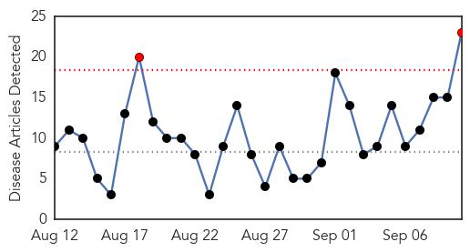
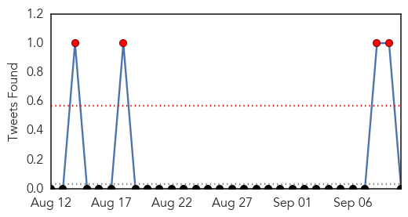
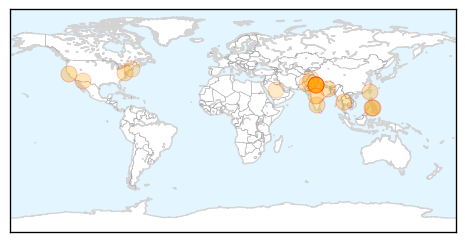
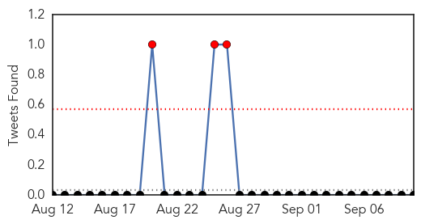

Dengue Fever
30-Day Web Trend
2 alerts, 0 warnings

30-Day Twitter Trend
4 alerts, 0 warnings

Article Locations
Article Confidences
Top Articles:
- 0.988
- Clinical trials of the first dengue vaccine to begin in a year
- 0.976
- Region, The Freeman Sections, The Freeman
- 0.975
- PHO notes increase of dengue cases in Antique
- 0.975
- Role of NS1 protein in Dengue revealed, could pave way for new therapeutics & vaccines
- 0.973
- UQ Scientists Close in On First Dengue Treatment
- 0.942
- :: News4u :: All geared up to address Dengue in the country: Govt
- 0.931
- Elusive fogging drive raises dengue spectre
- 0.924
- Government approves special fund to help fight dengue outbreak
- 0.896
- Xiamen releases latest research on mosquito density
- 0.884
- Bengaluru-Based Pharma Introduces Pill That Increases Platelet Count In Patients
- 0.879
- Delhi govt mulls banning Rapid Dengue Test
- 0.872
- First dengue treatment comes closer to reality , AniNews.in
- 0.829
- Delhi government to ban rapid diagnostic dengue test kit for being
- 0.805
- AZ high school students hunt for mosquitoes
- 0.777
- AIIMS staffer dies after high fever; dengue suspected
- 0.772
- 45-year-old AIIMS staffer dies of dengue
- 0.750
- At least 30 school girls fall unconscious due to anti-dengue fumigation in Attock
- 0.727
- Mobile phone records may predict epidemics of mosquito-borne dengue virus
- 0.724
- Delhi govt to ban rapid diagnostic dengue test kit for being
- 0.721
- Transfusion-Transmitted Babesiosis During Total Hip Arthroplasty
- 0.656
- The Frontier Post,Pakistan,Peshawar
- 0.623
- Attendant at AIIMS director’s office ‘succumbs to dengue’
- 0.566
- Injurious to health: Hospital Waste Management to be expanded to 15 districts
Top Tweets:
-
No tweets found for Sep 10, 2015
MERS
30-Day Web Trend
0 alerts, 1 warnings

30-Day Twitter Trend
3 alerts, 0 warnings

Article Locations

Article Confidences

Top Articles:
- 0.998
- Saudi Arabia, Jordan report more MERS cases
- 0.957
- Hajj 2015: Saudi Arabia bans camel meat
- 0.957
- Hajj 2015: Saudi Arabian Govt. Re-inforces Ban On Camel Meat
- 0.934
- Saudi Arabia bans camel slaughter during Haj
- 0.782
- Saudi- Camel slaughter during Haj banned
- 0.736
- Saudi bans slaughter of camel over MERS
Top Tweets:
-
No tweets found for Sep 10, 2015